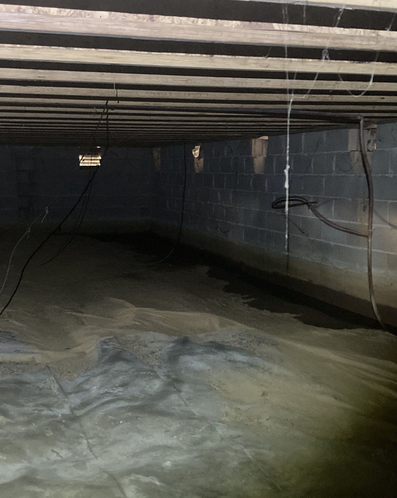
Moisture Conditions that Require Investigation
Damp soil, staining, affected materials, or moisture concentrated near an opening can indicate an active water source that must be located and corrected before encapsulation begins.
If your crawlspace stays damp, smells musty, or leaves the floors above it cold and uncomfortable, the problem does not stay beneath the house.
A damp or musty crawlspace can leave property owners dealing with unpleasant odors, cold or uncomfortable floors, recurring humidity, damaged insulation, and concerns about what is happening beneath the home. Standing water, wet soil, condensation, plumbing leaks, and outside water entering through foundation openings are problems that need to be investigated instead of covered with a liner.
Moisture and uncontrolled crawlspace air can affect indoor air quality, ductwork, HVAC performance, floor framing, foundation supports, insulation, plumbing, electrical components, comfort, humidity, and the amount of energy needed to heat and cool the home. The right solution begins by finding the water and air pathways, correcting the source of the problem, and designing the moisture-control system around the actual property.
Crain Bros Inc provides crawlspace encapsulation and conditioning services for property owners across Northeast Arkansas. We correct the conditions allowing water and moisture into the crawlspace, then coordinate the liner, air sealing, insulation, HVAC corrections, and humidity control needed for a cleaner, drier, more comfortable, and more energy-efficient home. Crain Bros Inc is family owned and operated since 1984.
Crawlspace encapsulation should begin by identifying and stopping the water and moisture sources. Water may enter through plumbing failures, foundation cracks and openings, low foundation vents, poor grading, roof runoff, groundwater, or exterior drainage conditions that direct water toward or beneath the building.
The HVAC system also requires careful inspection. A blocked, disconnected, damaged, or improperly routed condensate drain can release water into the crawlspace. Leaking or disconnected supply and return ducts can allow conditioned air to escape, while damaged or insufficient duct insulation can expose cold duct surfaces to warm, moisture-laden crawlspace air. When those surfaces reach the dew point, condensation can form on the ducts, insulation, equipment, framing, and nearby materials.
Air leakage around ducts, plumbing, wiring, access openings, and gaps in the floor system can also create a pathway between the crawlspace and the rooms above. Installing a liner or dehumidifier without correcting the water source, air leakage, condensation, or exterior drainage problem can cover the symptoms while the underlying condition continues.
The investigation should compare where moisture is concentrated with plumbing and HVAC conditions, foundation openings, exterior grading, gutters, downspouts, and the way roof and surface water move around the home. Damp soil, staining, affected insulation, deteriorated materials, and moisture near a specific opening can help identify what must be corrected before the crawlspace is enclosed.
Request a Crawlspace Leak Evaluation
Damp soil, staining, affected materials, or moisture concentrated near an opening can indicate an active water source that must be located and corrected before encapsulation begins.
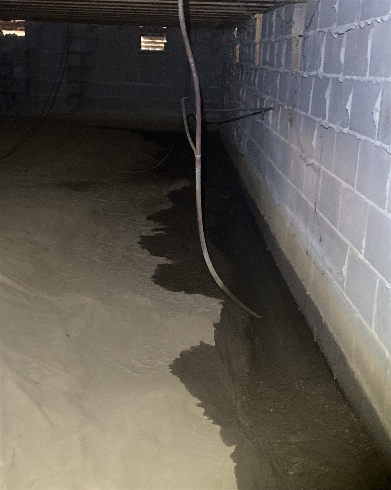
Standing water confirms that the crawlspace has an active water problem. Drainage, grading, foundation openings, plumbing, and discharge conditions must be evaluated before a vapor-control system or permanent dehumidifier is installed.
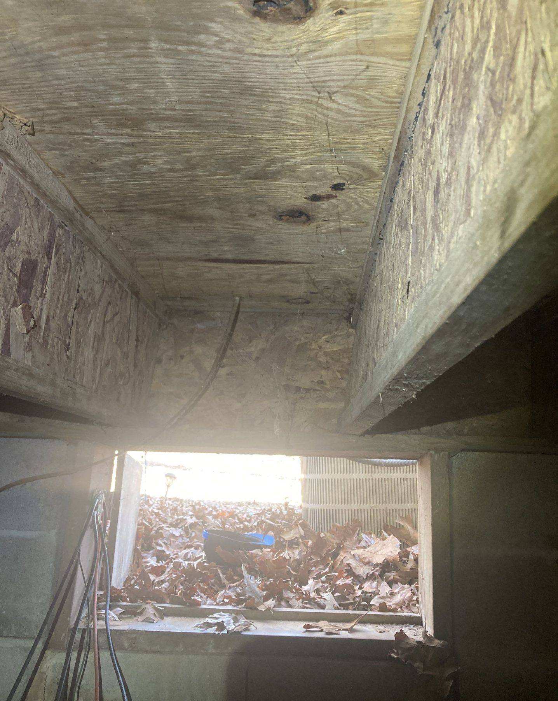
A foundation vent located close to the exterior grade can allow roof runoff or surface water to enter the crawlspace. Correcting the exterior water path and protecting the opening must happen before the crawlspace is sealed.
A crawlspace contains structural supports, floor framing, plumbing, electrical wiring, HVAC equipment, ducts, insulation, and other systems that must remain safe and serviceable. Encapsulation should not cover damaged materials, unsupported components, active leaks, unsafe electrical conditions, or structural movement.
Crain Bros Inc checks how moisture has affected the crawlspace and nearby building systems, then identifies the repairs needed before the new moisture-control system is installed. Wet or deteriorated materials may require removal, cleaning, drying, repair, or replacement. Structural support problems must be addressed as structural work rather than hidden beneath a moisture-control system.
Discuss Conditions beneath Your Home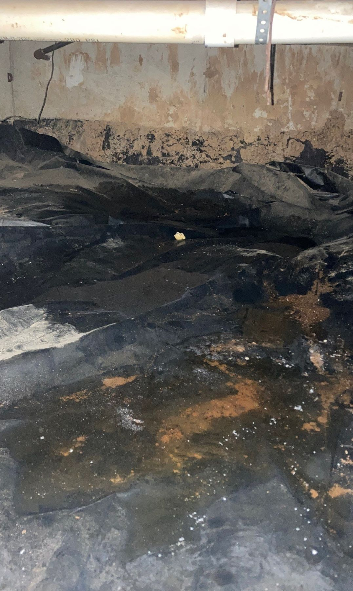
Water below a house can reach framing, insulation, wiring, plumbing supports, ducts, and mechanical equipment. The property owner needs to know which systems were exposed and what must be repaired before the crawlspace is closed.
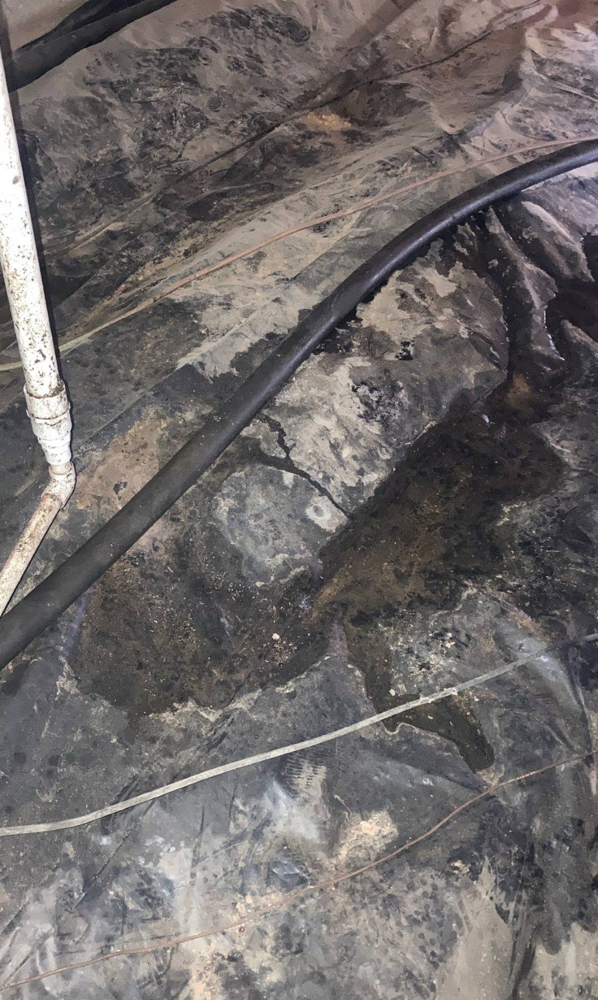
Water staining and material damage help identify where a leak traveled and what it affected. Preserving that evidence until the source is established reduces the risk of installing a liner over a problem that remains active.
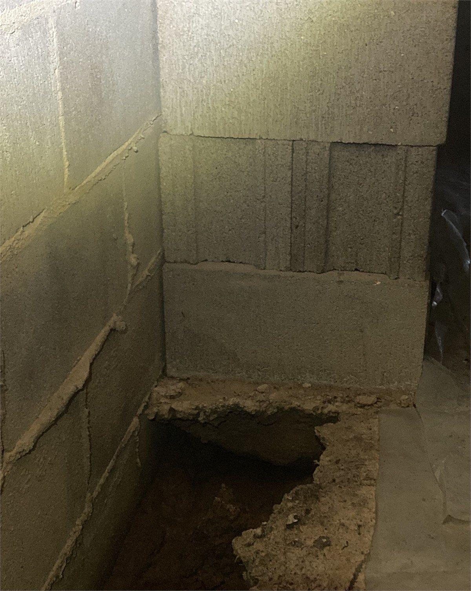
Water moving beneath a building can carry supporting soil away from piers, footings, and foundation areas. Encapsulation does not replace drainage correction or foundation repair where erosion has affected structural support.
Learn more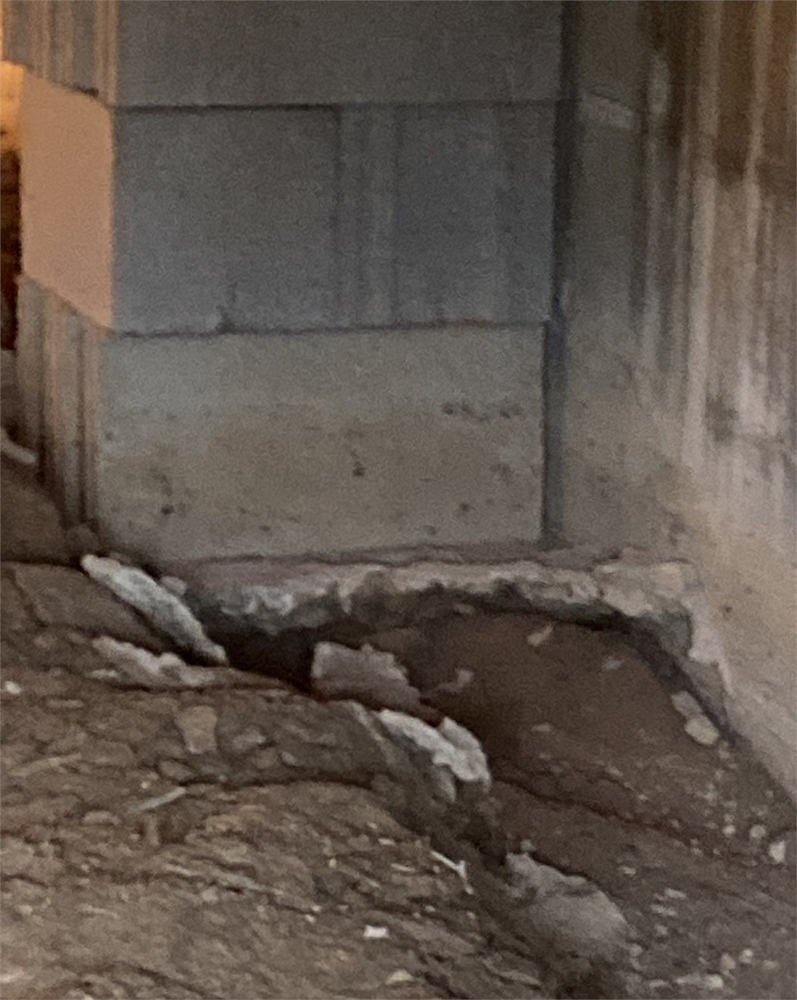
Where water and erosion have damaged masonry or reduced support, the plan must restore dependable structural support and correct the water movement. A new liner cannot carry structural loads or repair foundation damage.
Learn moreA crawlspace floor covering is one part of the system. The final design must account for exposed earth, seams, foundation walls, piers, penetrations, access openings, utility transitions, drainage, insulation, equipment, service paths, and areas that must remain visible for inspection.
The applicable code and property conditions determine the required materials and details. A minimum ground vapor retarder and a reinforced floor-and-wall encapsulation system are not automatically the same scope. The property owner should understand what surfaces are covered, how seams and transitions are sealed, where water will go, and how the completed assembly will be inspected and maintained.
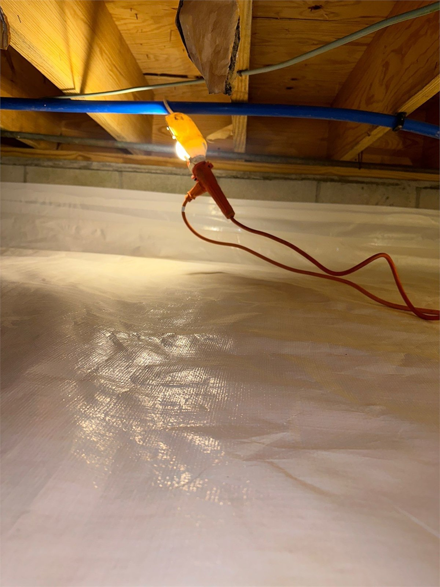
The liner separates exposed soil from the crawlspace environment. Coverage must remain continuous around supports and accessible areas so uncovered soil does not continue releasing ground moisture into the enclosed space.
The edges and openings are where an incomplete system fails. Foundation walls, piers, pipes, ducts, wiring, access areas, and other penetrations require planned transitions that control moisture without blocking inspection or service.
Crain Bros Inc does not install an encapsulation liner over an unresolved drainage problem or recurring standing water inside the crawlspace. Roof runoff, surface drainage, grading, foundation openings, groundwater, plumbing leaks, and mechanical-system water must be evaluated and corrected so water is directed away from the crawlspace. The liner is part of the moisture-control system. The liner is not a substitute for stopping water from entering the crawlspace.
Learn moreDrains, pumps, dehumidifiers, ducts, electrical connections, plumbing, cleanouts, valves, supports, and observation points should remain reachable after installation. Moisture control needs inspection and maintenance after the project is complete.
After leaks, drainage, damaged materials, and structural concerns are addressed, permanent dehumidification or another approved conditioning method can maintain a more stable crawlspace environment. The equipment must be sized for the space and coordinated with the liner, air sealing, insulation, condensate drainage, electrical service, and maintenance access.
The objective is not to make a dehumidifier fight standing water or uncontrolled outside air. The objective is to reduce the moisture load first, then use controlled drying to maintain the completed system. Humidity readings, condensate discharge, filters, alarms, power, drainage, and equipment operation should remain observable.
Plan a Conditioned Crawlspace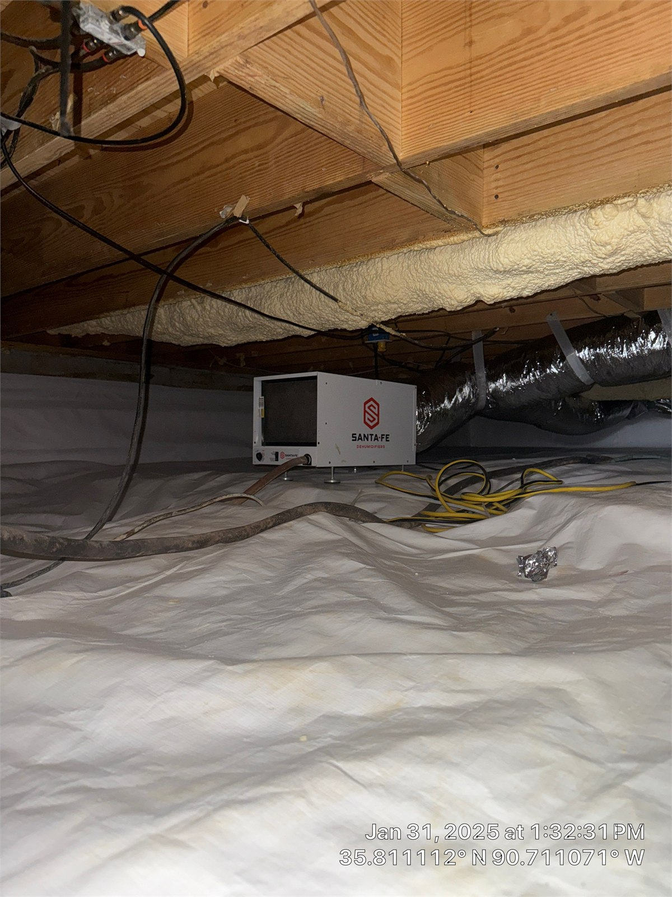
A permanently installed dehumidifier helps maintain controlled humidity after active leaks and enclosure defects are corrected. The unit needs dependable drainage, electrical service, filter access, operating clearance, and routine observation.
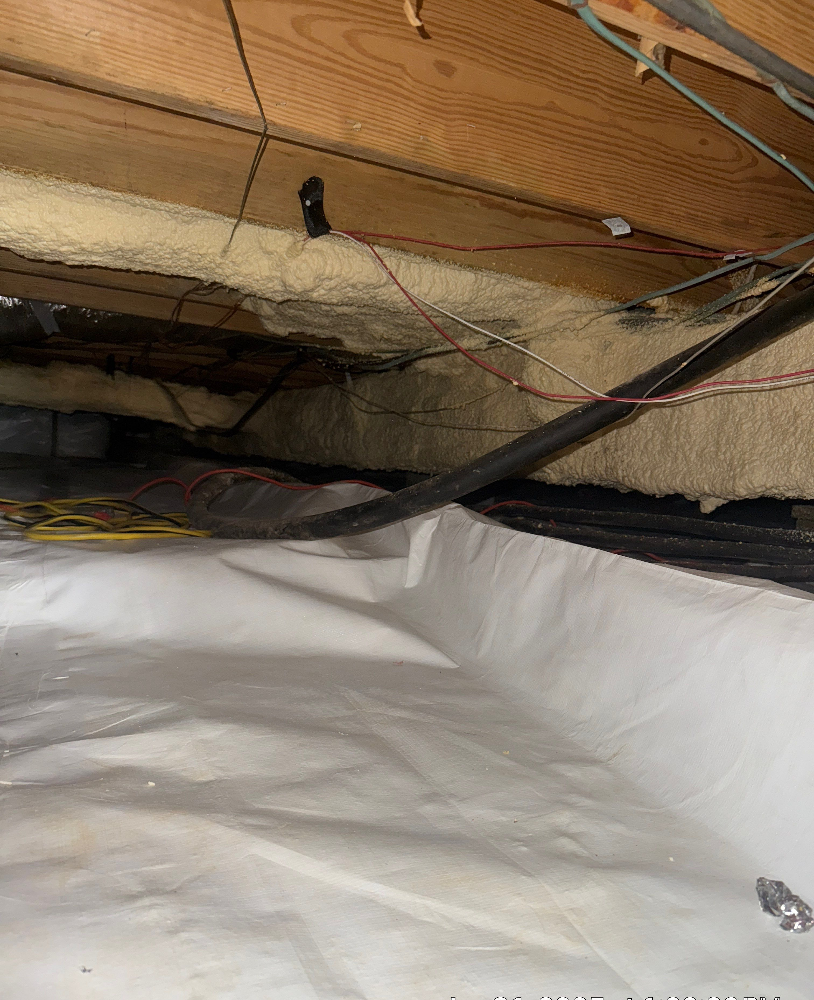
A conditioned crawlspace must work around ducts, plumbing, wiring, supports, and mechanical equipment. The liner and air-control details should protect the crawlspace environment while keeping each building system accessible for inspection and repair.
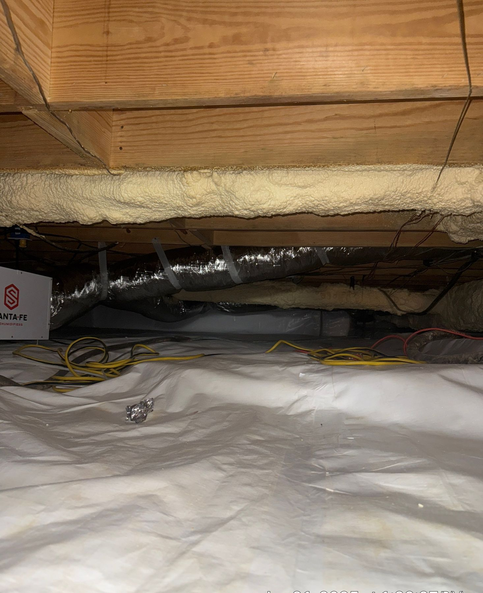
The completed system should control ground vapor, limit uncontrolled outdoor air, remove collected humidity, discharge condensate, protect mechanical components, and leave clear inspection and service routes beneath the home.
A vented or poorly sealed crawlspace can expose ducts, pipes, insulation, framing, and mechanical equipment to changing outdoor temperature and humidity. Air leakage through floor openings, duct connections, plumbing penetrations, wiring openings, and access areas can also connect crawlspace conditions with the occupied rooms above.
Leaking supply ducts can release conditioned air into the crawlspace. Leaking return ducts can draw crawlspace air into the HVAC system. Damaged or insufficient duct insulation can allow cold duct surfaces to contact warm, moisture-laden air, creating condensation on the ducts, insulation, equipment, and nearby building materials.
When the water sources are corrected and the crawlspace is properly sealed, insulated, and conditioned, the structure and mechanical systems operate in a more stable environment. The practical goals are to reduce uncontrolled heat and moisture movement, protect HVAC components and duct insulation, improve floor comfort, support better indoor air quality, and reduce moisture stress on the home.
Actual energy performance depends on the house, duct leakage, insulation, HVAC equipment, air sealing, outdoor conditions, and the completeness of the work. Crain Bros Inc does not promise a fixed percentage of energy savings.
Inspect the HVAC equipment, condensate drain, supply and return ductwork, duct connections, insulation, and air sealing. The evaluation should determine whether the system is releasing water, losing conditioned air, drawing crawlspace air into the system, or developing condensation on cold components.
Learn moreSupply lines, drains, fixtures, appliances, and HVAC condensate systems can release water beneath the building. Mechanical moisture control should not be expected to compensate for an active plumbing or condensate leak.
Learn moreWiring, connections, receptacles, extension cords, and powered equipment should not remain exposed to standing water, recurring condensation, physical damage, or inaccessible locations. Electrical concerns should be corrected before the crawlspace is enclosed.
Learn moreWet, fallen, compressed, or contaminated insulation cannot perform as intended. Insulation work should follow leak correction, drying, cleanup, and the chosen crawlspace moisture-control design.
Learn moreENERGY STAR guidance explains that crawlspaces are often connected to indoor air through unintended openings in floors, partitions, and ducts. ENERGY STAR describes a closed crawlspace as a system that must manage exterior water, ground moisture, air leakage, insulation, mechanical equipment, and humidity together.
The U.S. Department of Energy describes an effective crawlspace as beginning with a water-managed foundation system that directs rainwater and groundwater away from the foundation. Air sealing and complete insulation coverage follow water management rather than replacing it.
International Residential Code provisions for unvented crawlspaces include a continuous Class I vapor retarder over exposed earth, sealed joints and edges, and an approved method of controlling crawlspace air and humidity. Depending on the applicable code and design, that method may involve mechanical exhaust, conditioned air, an eligible plenum arrangement, or properly sized dehumidification.
Model-code language does not automatically establish the requirements for every Arkansas property. The locally adopted code, property conditions, proposed work, equipment, permits, inspections, and authority having jurisdiction must be confirmed for the specific project.
Roof runoff, grading, surface drainage, foundation openings, groundwater, plumbing failures, and mechanical-system water must be evaluated before the liner and air-control system are installed.
Floor openings, penetrations, access areas, supply and return duct leakage, condensate drainage, and duct insulation can affect humidity, condensation, comfort, indoor air quality, and energy performance.
Vapor-retarder details, wall transitions, inspection clearances, insulation, combustion safety, electrical service, drainage, humidity control, and mechanical-system requirements must follow the approved project design and applicable jurisdiction.
Property owners can help preserve evidence, identify recurring conditions, and keep the completed system maintainable. The goal is not to diagnose the crawlspace from one stain or humidity reading. The goal is to record when and where conditions occur so the investigation and repair address the correct source.
Continue monitoring the crawlspace after installation. Major rain events, plumbing repairs, HVAC service, power interruptions, drainage changes, and new construction around the property can change how water and humidity move beneath the building.
Call Crain Bros about Your CrawlspaceObserve gutters, downspouts, grading, ponding, erosion, access doors, and low foundation vents during safe rainfall conditions. Record where water moves toward or beneath the building.
Look for standing water, wet soil, new staining, damp masonry, liner movement, odors, equipment alarms, or water tracks. Date photographs so changes can be compared over time.
Inspect plumbing, drains, HVAC equipment, condensate piping, foundation openings, and exterior water paths. Do not seal the crawlspace while an active leak remains unresolved.
Determine whether low vents or access openings admit runoff, debris, pests, or humid outside air. Closure or alteration must be coordinated with drainage, mechanical, inspection, and applicable code requirements.
Review framing, subflooring, girders, piers, foundation walls, insulation, and stored materials for moisture effects, deterioration, displacement, contamination, and loss of support.
Learn moreInspect HVAC equipment, condensate drainage, supply and return duct connections, damaged duct insulation, plumbing supply and drain lines, wiring, receptacles, powered equipment, and service access. Determine whether the HVAC system is losing conditioned air, drawing crawlspace air into the system, or developing condensation on cold components.
Do not trap wet insulation, debris, deteriorated materials, contamination, or unresolved structural damage beneath a new liner. Cleanup and repair should occur before concealment.
Learn moreVerify floor coverage, seams, wall transitions, supports, penetrations, access areas, drainage, inspection gaps, and service routes under the approved design.
Use the approved dehumidification, conditioned-air, or ventilation strategy designed for the crawlspace. Confirm condensate discharge, power, settings, filters, alarms, and service access.
Watch humidity, equipment operation, outlets, drains, liner condition, odors, visible water, plumbing, ducts, and structural areas. Inspect after major rain and report recurring leaks promptly.
Yes. Plumbing leaks, HVAC condensate leaks, water entering through foundation openings, drainage problems, standing water, and other active water paths should be identified and corrected before the crawlspace is enclosed.
Yes. A vent close to exterior grade can admit runoff, wind-driven rain, debris, pests, and humid outdoor air. The opening and exterior drainage conditions should be evaluated together.
Not automatically. A ground vapor retarder covers exposed earth. A complete encapsulation design can also address seams, walls, piers, penetrations, access areas, air sealing, insulation, drainage, conditioning, inspection, and maintenance.
The required moisture-control method depends on the design, property conditions, equipment, and applicable code. Where permanent dehumidification is used, the unit should be correctly sized, drained, powered, monitored, and accessible for service.
A properly sealed, insulated, and conditioned crawlspace can reduce uncontrolled heat and moisture exchange and place ducts and equipment in a more stable environment. Actual savings depend on the house, HVAC system, duct leakage, insulation, air sealing, and installation quality.
Condensate leaks, damaged or wet duct insulation, disconnected or crushed ducts, air leakage, equipment drainage problems, and inaccessible service conditions should be addressed as part of the crawlspace plan.
Wiring, connections, receptacles, cords, and powered equipment should not remain exposed to standing water, recurring condensation, physical damage, or inaccessible locations. Electrical concerns should be corrected before enclosure.
Monitor humidity, dehumidifier operation, condensate discharge, drains, pumps, liner condition, visible water, odors, plumbing, HVAC ducts, electrical equipment, and structural areas, especially after major rainfall.